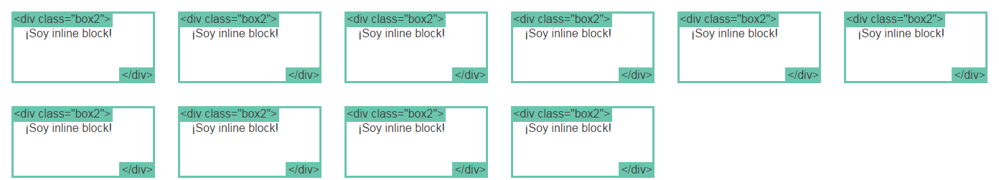
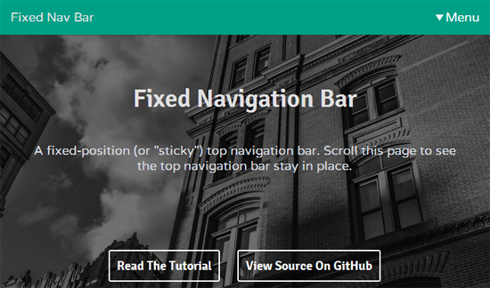

Creado por Ignacio Céspedes C.
Es la propiedad más importante para controlar estructuras.
Cada elemento en el DOM tiene un valor de display
por defecto.
El div es el elemento block estándar. Un elemento block comienza en una nueva línea y utiliza todo el ancho posible.
Otros elementos HTML block son: p, form, header, footer y section.
El span es el elemento inline estándar. Un elemento inline puede contener texto dentro de un párrafo, sin interrumpir el flujo del párrafo
El elemento a es el elemento inline más común, se usa para los links.
inline-block nos permite posicionar elementos de tipo block, con un width definido, uno al lado del otro.
Margin: Corresponde al margen exterior de un elemento del DOM desde su borde.
Padding: Corresponde al margen interior de un elemento del dom desde su borde.
El orden de asignación de unidades de medida es top right bottom left

Width: Corresponde al ancho de un elemento. Se puede especificar un máximo y un mínimo.
Height: Corresponde al alto de un elemento. Se puede especificar un máximo y un mínimo.
Ambas propiedades soportan unidades de medida como px, %, viewport.
La propiedad box-sizing se utiliza para bloquear el ancho de elementos que tienen padding y border.
Los elementos no incrementarán su ancho.
Una de las propiedades CSS más complejas de dominar. Permite la creación de estructuras complejas.
Solo es posible dar propiedades top, right, bottom y left a un elemento posicionado (!static).
static es el valor por defecto de todo elemento HTML. Un elemento estático no está posicionado de ninguna forma.
Un elemento relative se comporta de la misma manera que static a menos que le agreguemos otras propiedades
Un elemento fixed se posiciona a la ventana del navegador de manera relativa, esto significa que siempre mantendra el mismo lugar incluso después de hacer scroll.
absolute se comporta como fixed pero es relativo a su ancestro posicionado más cercano, en lugar de ser relativo a la ventana del navegador.
Si no tiene ancestros, usará el elemento body.
Otra propiedad CSS para estructurar es float. Float se usa principalmente para envolver imágenes con texto.
"Responsive Design" es la estrategia para hacer que un sitio "responda" al navegador y dispositivo en el que se muestra.
Los media queries son la herramienta más poderosa para hacer esto.
La nueva estructura con flexbox va a redefinir la manera en que se trabaja CSS.
| Chrome | Safari | Firefox | Opera | IE |
|---|---|---|---|---|
| Todos | Todos | Todos | 12.1+ | 10+ |
Actualmente existe una gran cantidad de frameworks que ayudan, en gran medida, a despreocuparnos del diseño y enfocarnos en la lógica.